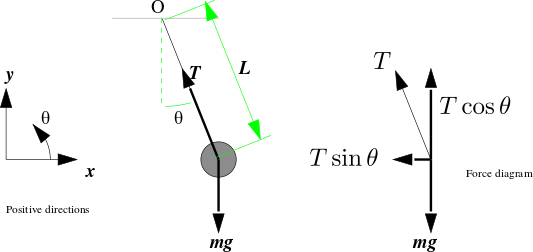

During our high school days we are taught that a simple pendulum executes an
approximately simple harmonic motion if the angle of swing is small. However, high
school textbooks avoid discussing the general case: the motion of a
pendulum that may swing to larger angles. The main reason is that this leads
to an unmanageable differential equation that cannot be solved without a computer.
Consider the following diagram.

Simple pendulum
Taking $O$ as the origin and positive
$x$- $y$- and $\theta$-directions as shown, the position of
the bob is
$$\begin{eqnarray*}
x & = & L\sin(\theta)\\
y & = & -L\cos(\theta).
\end{eqnarray*}$$
Remember that $\theta $ is a function of time $t.$ So the above
equations actually mean
$$\begin{eqnarray*}
x(t) & = & L\sin(\theta(t))\\
y(t) & = & -L\cos(\theta(t)).
\end{eqnarray*}$$
The forces on the bob along the positive $x$- and $y$-directions
are, respectively,
$$\begin{eqnarray*}
F_x & = & -T\sin(\theta)\\
F_y & = & T\cos(\theta)-mg.
\end{eqnarray*}$$
Here $T$ is the tension in the rod. It is also a function of
$t.$
To derive the equations of motion we shall use Newton's second law of
motion, which says
$$\begin{eqnarray*}
F_x & = & m x''\\
F_y & = & m y'',
\end{eqnarray*}$$
where $x''$, $y''$ denote the second derivatives of $x(t)$, $y(t)$ with respect
to $t.$
Differentiating $x(t)$ and $y(t)$ twice we get
$$\begin{eqnarray*}
x'' & = & -L \sin(\theta)(\theta')^2 + L \cos(\theta)\theta ''\\
y'' & = & L \cos(\theta)(\theta')^2 + L \sin(\theta)\theta ''.
\end{eqnarray*}$$
Putting these in Newton's second law, and simplifying, we get
$$
\theta '' = -\frac gL \sin(\theta).
$$
At this point most textbooks use
the ``$\sin(\theta)\approx \theta $'' approximation for "small"
$\theta$ to reduce the above differential equation to
$$
\theta '' = -\frac gL \theta,
$$
which can be solved easily by hand to produce simple harmonic
motion. The approximation is pretty good if the pendulum swings
within $4^\circ$. But not all pendulums swing within that
range. What if you have a pendulum that swings $30^\circ?$
That's what we are going to explore now.
We first reduce the second
order differential equation $\theta '' = -\frac gL\theta$
to a system of first order equations.
$$\begin{eqnarray*}
\theta ' & = & \omega\\
\omega' & = & -\frac gL \theta.
\end{eqnarray*}$$
Notice that $(\theta',\omega')$ is given as a function
of $(\theta,\omega).$ The entire motion of the pendulum is
determined if we know $(\theta,\omega)$ at some instant. So
we call $(\theta,\omega)$ the phase of the system. We
are given the initial phase of the system, i.e., we know from which initial angle we have released the
pendulum, and with what angular velocity. Our aim is to know the phase at
all time points during the swing.
Thus, at $t=t_0$ (specified number), we know
$$\begin{eqnarray*}
\theta & = & \theta_0\mbox{ (specified number)},\\
\omega & = & \omega_0\mbox{ (specified number)}.
\end{eqnarray*}$$
We want to know the values $\theta(t)$ and $\omega(t)$ at any given $t > t_0.$
Thanks to the differential equations, we also know
the rate at which they are increasing at $t=t_0:$
$$\begin{eqnarray*}
\theta'(t_0) & = & \omega_0,\\
\omega'(t_0) & = & -\frac gL\sin \theta_0.
\end{eqnarray*}$$
Now advance time a little to $t_1=t_0+\delta t$, say. By this
time $\theta$ and $\omega$ will roughly change to
$$\begin{eqnarray*}
\theta_1 & = & \theta_0 + \theta'(t_0)\delta t = \theta_0+\omega_0\delta t\\
\omega_1 & = & \omega_0 +\omega'(t_0)\delta t =
\omega_0-\frac gL\sin \theta_0 \delta t.
\end{eqnarray*}$$
So we get the phase (approximately) at $t_1= t_0+\delta t.$
Now we keep on advancing time by $\delta t$ increments. The same
logic may be used repeatedly to give, at $t_k = t_0+k\cdot\delta t,$
$$\begin{eqnarray*}
\theta_k & = & \theta_{k-1} + \omega_{k-1}\delta t\\
\omega_k & = & \omega_{k-1} -\frac gL\sin \theta_{k-1} \delta t.
\end{eqnarray*}$$
Admittedly, this is a rather crude approximation. However, if $\delta t$ is pretty small, the accuracy increases.
Let's explore this numerically using the following J code: